AIDAMS · Marketing Analytics
Session 2
Product Analytics
Announcements
- Assignment 1 will be posted today
- Deadline: Monday next week (21 September)
- Form groups of 2–3 for Assignments 3, 4, and 5
- Sign up on Moodle
Some changes in the course policies
- Two-day workshop on teaching effectiveness
- Led by highly rated teaching professors
- Strong shared advice: no electronics
- ~90% use laptops for email / homework
- Resistance first → satisfaction later
- Better focus, learning, interaction
- No phone, no laptop in the first half
- Put your laptop and phones in your backpack (silent your phones)
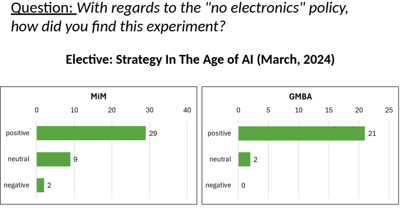
Why segmentation?
- Group people based on their needs
- Choose which groups we want to focus on
- It is not always a good idea to target everybody
- Optimize the 4 Ps for those groups
Targeting after segmentation
- After segmentation, we still need to know how to reach each segment
- Optimize advertising and promotion toward the right people
Procedure
- Define the question → know what data you need
- Design the questionnaire
- Gather data
- Segmentation dataset + descriptors dataset
- Segment with K-means on the segmentation data
- Find a good number of clusters \(K\)
- Target using the descriptor data
- Can we target? Are descriptors good enough?
- Check with a confusion matrix
ESSEC EMBA · naming the segments
From the in-class consulting project
- Excellence seekers — reputation, ranking, networking; knowledge & personal development (not salary / promotion)
- Career sharks — change career & company to raise salary and get promoted
- New opportunity seekers — switch field / company; more personal development than pay; mostly female, mostly French
- Growth-seeker internationals — stay in role/company; seek promotion & skills; often employer-funded
How can ESSEC optimize the 4 Ps for each of these segments?
ESSEC EMBA · targeting lesson
Our confusion matrix was not good enough — descriptors did not predict segments well.
- Question 1: What other data would help us target people better and distinguish segments?
- Question 2: Once we have that data, how can we do better targeting?
What is perception?
Think about the following brands. What words come to mind?
- Starbucks
- Apple
- TikTok
- H&M
This is our brand perception.
Why does it matter?
- Make sure we are aligned with our positioning
- Remember STP: Segmentation → Targeting → Positioning
- Check our competitors
- Check how our actions have changed our positioning
- Example: does a campaign make people see us as greener / more environmentally friendly?
- Is there an opportunity for a new sub-brand?
- Should we reposition?
Brand & consumer identities
- Brands have identities — innovative, premium, sustainable, playful, trustworthy, rebellious, caring, …
- How are these identities created?
- Through the 4 Ps: Product, Price, Place, Promotion
- Example: how has Apple shaped its perception through its 4 Ps?
- How are these identities created?
- Consumers also have identities and aspirations
- Who we are — and who we want to be
- We use consumption to signal our identities
- Give examples from your personal life
- Brands match their identities with users’ aspirations
- Brands create aspirations in people to match their identities
Illustration #1 · Volvo
- Volvo has long been positioned on safety
- Yet others pioneered key safety innovations:
- GM — barrier crash test (1934)
- Saab — safety cage (1949)
- Ford — fleet with airbags (1971)
Yet… Volvo = Safety
Illustration #2 · Drilling company
- Do you know this kind of story?
- A company created something cheaper and faster than rivals
- Yet they could not sell it
- Any idea why?
How the company saw the market
- They were faster and cheaper than the competition
- They thought they were “dominating”
- Yet sales were not impressive…
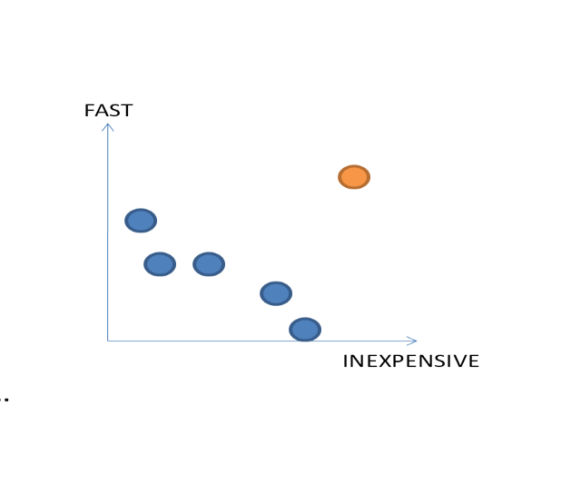
How customers saw the market
- Their positioning was not credible
- The product became successful once they increased the price
- Lesson: perceived value matters more than claimed specs
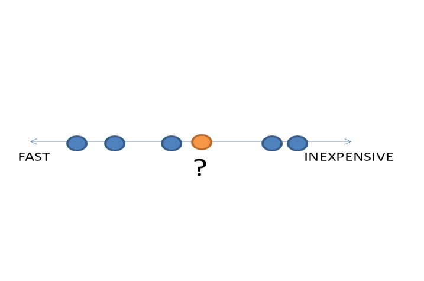
Illustration #3 · Débitel
- French low-cost mobile reseller (no own network)
- Bought airtime from SFR (#1 in quality)
- Network quality perceptions:
- SFR = 8.0 / 10
- Débitel = 5.9 / 10
- Same network — different brand perception
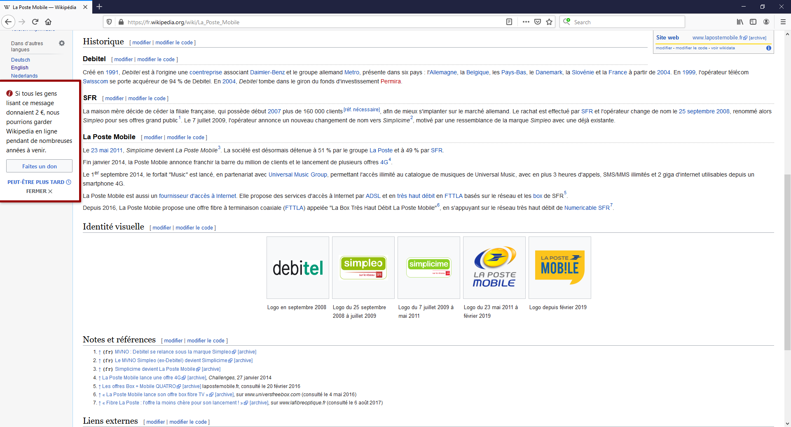
Perception might not be aligned with the truth
- We always need to consider caveats
- We need to do market research to understand
- how consumers perceive us — which might differ from the facts
- whether our brand perception is still relevant
- If needed, we might need to rebrand or reposition
- Which can be very costly and risky
Case · Jaguar (classic brand)
What comes to mind when you think about Jaguar?
- Positioning: British luxury + performance (“grace, space, pace”)
- Target: affluent, success-driven buyers who value heritage & status
- Often perceived as elegant — but also traditional / older
Jaguar’s positioning jump
This is not a small refresh — it is a deliberate repositioning.
Heritage luxury
- British elegance & performance
- Status through tradition
- Older / more traditional buyers
- Compete nearer mainstream premium
Design-led ultra-luxury EV
- Exuberant Modernism · “Copy Nothing”
- Status through originality & art/design
- Younger, design-conscious, cash-rich buyers
- Aim closer to ultra-luxury / exclusive EV
How Jaguar is signaling the new position
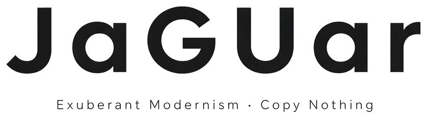
- Art / culture reveal (Miami Art Week)
- Partnership with the Royal College of Art
- Costly bet: Why?
- A new perception means you change previous perception → losing old customers
- Reshape perception before new cars fully arrive
- You may face bankruptcy
How do we measure customers’ perceptions?
- Ask them directly across attributes
- E.g. “How sporty is BMW?” (1 = low, 5 = high)
- Direct surveys are common in marketing research
Perceptual study
A study designed to evaluate how different brands are perceived across dimensions
- Average perception scores by brand × attribute
- Useful for competition, gaps, and new-product opportunity
What do you see?
Perceptual study — beer brands in Spain
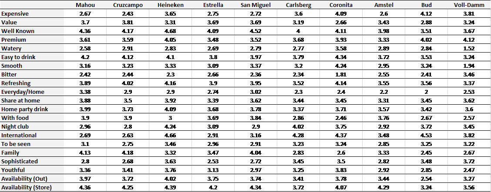
Who are the competitors? Is there room for a new product?
From tables to positioning maps
- Raw perceptual tables are hard to act on
- Positioning maps turn them into a visual competitive picture
A simple positioning map
- Place competitors on a map
- Position along dimensions relevant to customers
- Short distance ≈ fierce competition
- Where would mandarin oranges go?
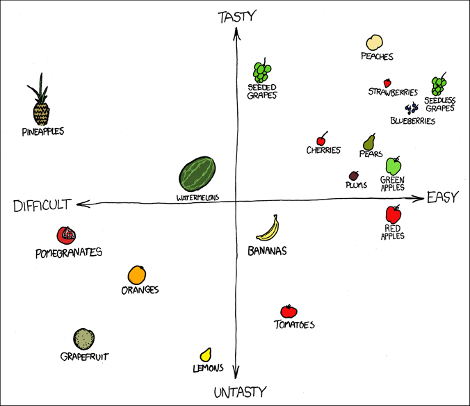
Simple tool, powerful insights
- Easy to read — humans are good with 2D graphics
- Easy to communicate, convince, and act
- Creates the “aha” moment managers need
Running a positioning study
Stage 1 · Design
Select relevant brands
Select relevant dimensions / questions
Stage 2 · Collect
Develop the survey
Collect data → perceptual table
Stage 3 · Analyze
How many dimensions?
Interpret brands, axes, gaps
Stage 1 · Design
- Brands: known by the segment; include category leaders
- Dimensions: descriptive attributes customers actually use
- Include attributes that represent included brands (e.g. Volvo → Safety)
- Choose a scale (e.g. 1–7)
Stage 2 · Collect data
- Develop the survey (perceptual ± preference data)
- One matrix per respondent
- Average perceptual ratings over the sample
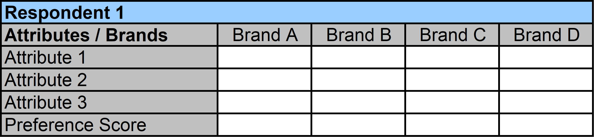
Outcome after Stage 2
It is hard to use this table as is.
Correlated car attributes
- Perceptual study of car brands across 6 dimensions
- Affordable · Practical · Class · Sporty · Youth appealing · Fun
- The plot shows correlations among attributes
- Which attributes are correlated?
- Can we merge the correlated attributes somehow?
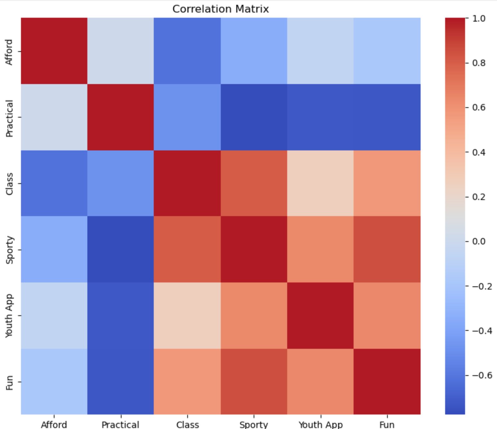
What we want from a positioning map
- Merge correlated features into a few dimensions
- E.g. one axis capturing luxury / price / success
- Create 2–3 dimensions that retain most variation
- Map brands in a visually actionable figure
Mapping brands
- Close brands on the map ≈ close competitors
- Customers perceive them similarly
- They compete on the same dimensions — but which ones?
- Can you think about what the dimensions are in the plot?
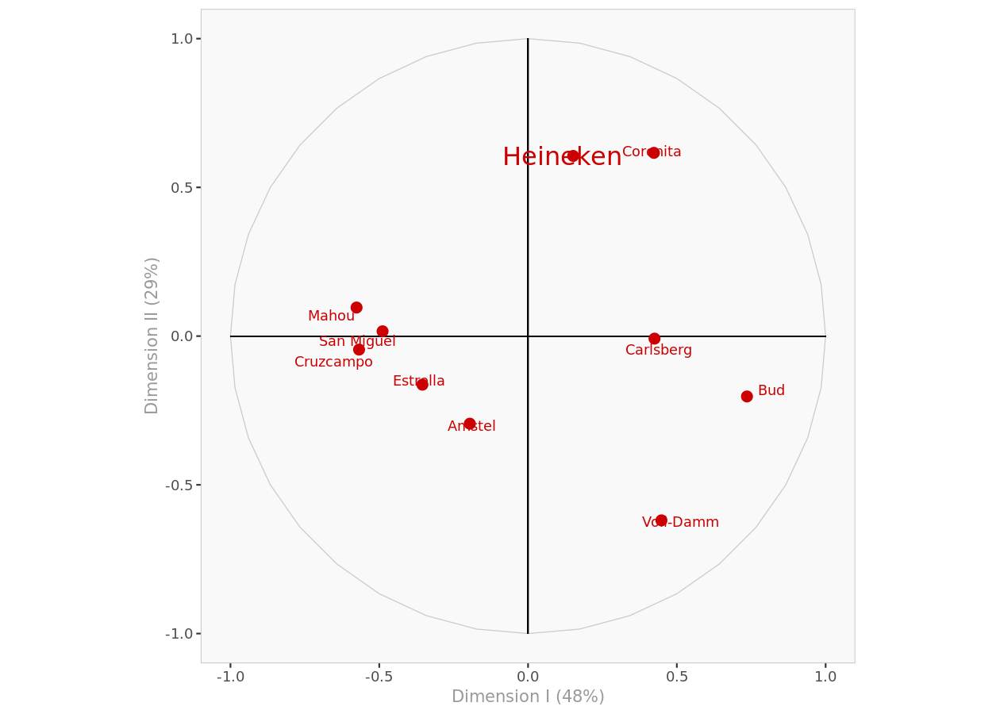
A complete example
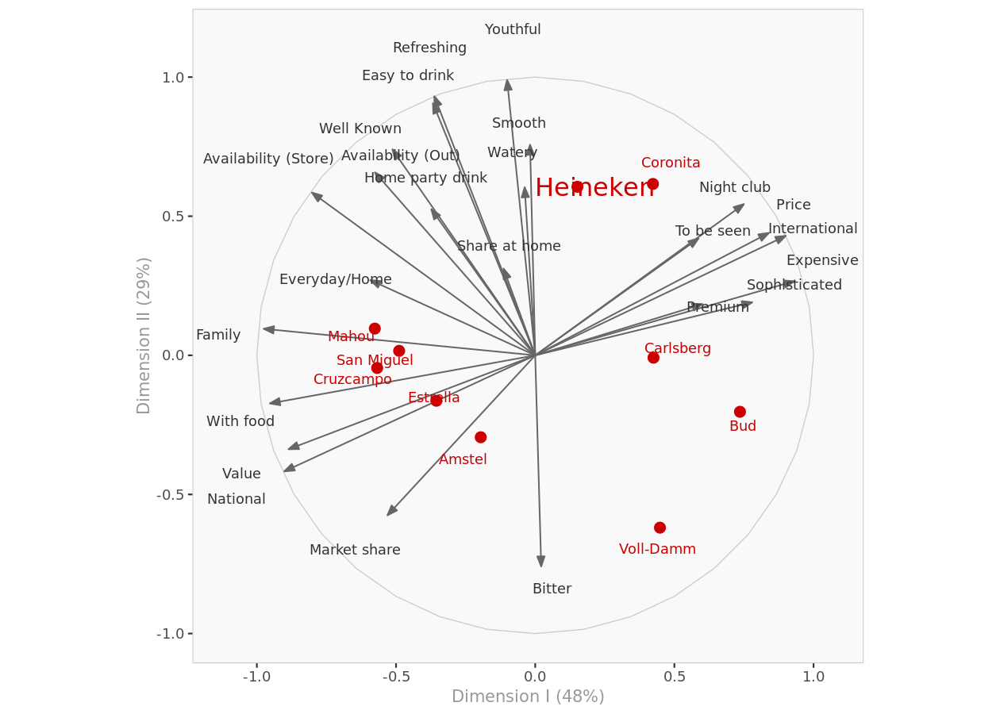
What is PCA?
- Broad constructs often live in several correlated variables
- watery, smooth, bitter, youthful, refreshing, easy to drink → Tasteful
- sophisticated, expensive, premium, to be seen, family, everyday, casual → Elegance
- PCA summarizes many correlated variables into fewer uncorrelated factors
PCA algorithm
In
Several correlated variables \(x_1, x_2, \ldots, x_k\)
Out
A few distinct, uncorrelated factors \(f_1, f_2, f_3\)
Is PCA a supervised or unsupervised algorithm?
PCA explained
- Ratings on Safety (\(X_1\)) and Reliability (\(X_2\))
- Clear positive correlation
- Are we measuring one construct (e.g. quality)?
PCA in practice
The data come from the previous slide. Run PCA, then rotate. Hover a point for coordinates.
Factor scores
- New dimensions are weighted combinations of the originals
- Ratings in \(X_1, X_2\) → scores on \(F_1, F_2\)
- Weights = factor score coefficients (from PCA eigenvectors)
- \(F_1\) and \(F_2\) are uncorrelated
\( F_j = w_{1j} X_1 + w_{2j} X_2 + \cdots + w_{kj} X_k \)
The main idea
- Suppose we start with 6 variables (\(X_1\) to \(X_6\))
- PCA returns 6 new factors (\(F_1\) to \(F_6\)), each explaining some share of total variance
- \(F_1\) explains the most; later factors explain less and less
- Keeping the top few factors retains most of the information with far fewer dimensions
| \(F_1\) | \(F_2\) | \(F_3\) | \(F_4\) | \(F_5\) | \(F_6\) | |
|---|---|---|---|---|---|---|
| Variance explained | 62% | 22% | 8% | 4% | 3% | 1% |
| Cumulative | 62% | 84% | 92% | 96% | 99% | 100% |
Choosing the number of components
- Elbow / scree method — systematic
- Intuition / use case — for a map, we usually keep 2 (or 3)
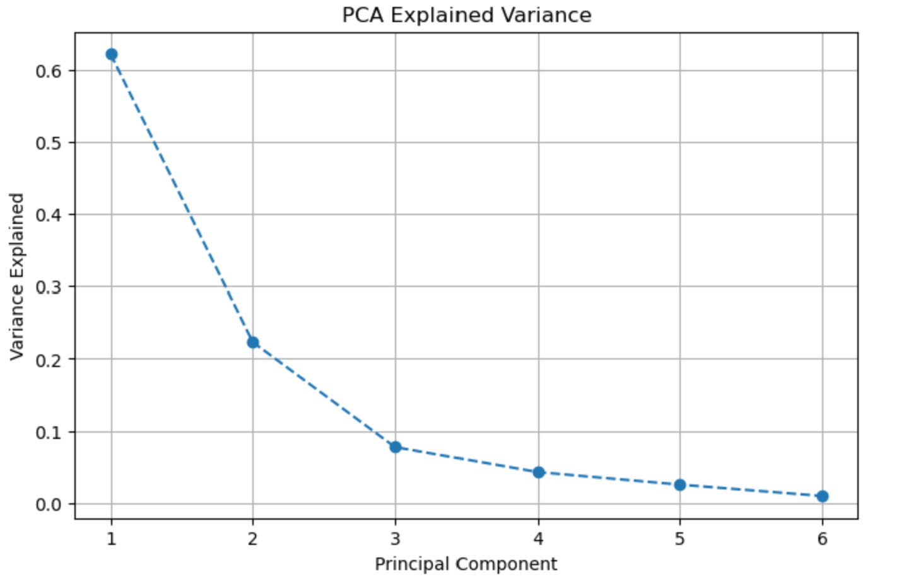
Naming the factors
- We need to name the new factors (\(F_1, F_2, \ldots\))
- Why is it important to name the new factors?
- How can we come up with names?
- Based on their relationship with the original variables
- What would you call \(F_1\)?
-
\( F_1 = 0.4\,(\text{smooth}) + 0.5\,(\text{refreshing}) - 0.9\,(\text{bitter}) - 0.02\,(\text{family}) + 0.05\,(\text{premium}) \)
- Make sure factor names are directional
- “Taste” is not directional — tasteful is
- “Economy” is not directional — economical is
Understanding car brand perceptions
- Survey of 20 consumers on six car brands
- Brands: Taurus, Mazda, Camry, Acura, BMW, Volkswagen
- Each brand rated on six attributes (1–7 scale)
- Data:
car-ratings.csv - Goal: infer perceptions and relative positions in consumers’ minds
Three-step method
1 · Explore
Rescale · correlations · aggregate brand ratings
2 · PCA
Fit PCA · link factors to attributes · choose & name factors · plot
3 · Map and Analysis
Aggregate factor scores by brand · 2D positioning map · analyze the map
Coming assignment teaser
- Understand attitudes toward discount stores
- Same PCA toolkit — but for segmentation, not brand maps
- Plot people (not brands) on factor scores; nearby respondents ≈ a segment
Details and deadline will be posted with the assignment brief.
Assignment submission & generative AI
- Submit via Google Colab link and share the notebook with me
- Read the instructions at the end of the assignment file
- Generative AI is allowed to help you solve problems
- Including help with code, debugging, and wording
- Do not copy-paste class materials into AI
- Use the slides to understand concepts, then use AI to implement and solve
- End every assignment with an AI usage statement
- Which tools you used, and how (what you wrote vs what AI wrote)
- Confirm you did not give the course slides to AI